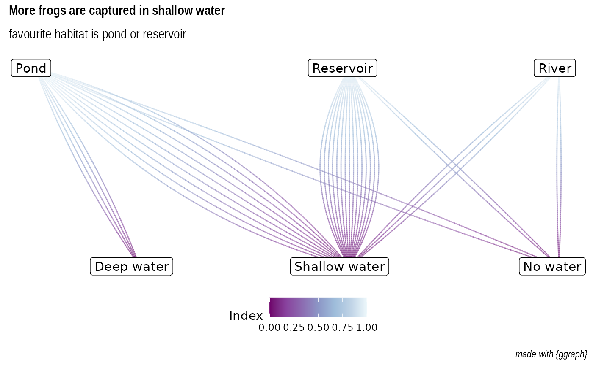

Example on how to use oregonfrogs for making a
graph network
library(tidyverse)
library(igraph)
library(ggraph)
frogs <- oregonfrogs %>%
janitor::clean_names() %>%
mutate(survey_date = as.Date(survey_date, "%m/%d/%Y"),
sex = as.factor(sex)) %>%
arrange(doy) %>%
mutate(
subsite = case_when(
subsite == "W Res" ~ "West Reservoir",
subsite == "SE Pond" ~ "South East Pond",
subsite == "NE Res" ~ "North East Reservoir",
subsite == "N Res" ~ "North Reservoir",
TRUE ~ subsite
)
)
network_plot <- frogs %>%
filter(detection == "Captured") %>%
count(hab_type, water, substrate, frequency) %>%
igraph::graph_from_data_frame() %>%
ggraph('auto') +
geom_edge_fan2(
aes(color = rev(stat(index))),
alpha = 0.5,
strength = 1.2,
lineend = "round"
) +
ggraph::geom_node_label(aes(label = name),
vjust = 0.5,
hjust = 0.6,
size = 4) +
ggraph::scale_edge_colour_distiller(name = "Index",palette = 3) +
ggraph::scale_edge_alpha_continuous(name = "Index") +
ggraph::theme_graph() +
labs(title = "More frogs are captured in shallow water",
subtitle = "favourite habitat is pond or reservoir",
caption = "made with {ggraph}") +
theme(text = element_text(family = "Roboto Condensed"),
legend.position ="bottom",
plot.margin = unit(c(5,5,5,5),units = "pt"),
plot.title = element_text(size=12))
network_plot